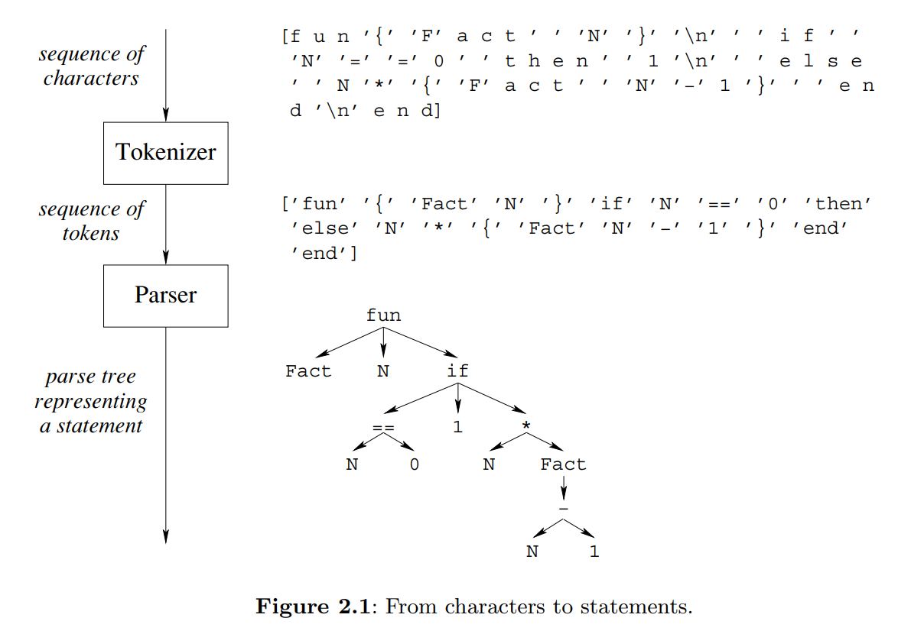

💬 TDT4165 - Programming Languages
371 pages.
Links
0 Preface (p i-xxvii)
| Concept | Definition |
|---|---|
| Computation model | A formal system that defines how computations are done. (Data types, operations, and a programming language) |
| Programming model | What the programmer needs: the programming techniques and design principles made possible by the computation model. |
| Kernel language | A simple core language of a computation model |
| Creative extension principle | A new concept is added when programs become complicated for technical reasons unrelated to the problem being solved |
| Programming | The act of extending or changing a system’s functionality |
| Computation model | Languages |
|---|---|
| Object-oriented | Java, Smalltalk |
| Functional | Haskell, Standard ML |
| Logic | Prolog, Mercury |
| Concurrent | Erlang |
In the kernel language approach, a practical language is translated into a kernel language that consists of a small number of programmer-significant elements. The rich set of abstractions and syntax is encoded in the kernel language, giving insight into what the language does. Simple formal semantics allow reasoning about program correctness and complexity. This is a language-independent way to study programming.
1 Introduction to Programming Concepts (p 1-23)
Variables, functions and lists
The declare statement creates a new store variable and makes the variable identifier refer to it. There are two concepts hiding behind the word “variable”:
- The identifier.
- The store variable.
The fun statement defines a function. The variable Fact is bound to the function. The function has one argument N, which is a local variable.
declare
fun {Fact N}
if N==0 then 1 else N*{Fact N-1} end
end
A list [1 2 3] is a chain of links HEAD|TAIL, where each link contains two things: one list element and a reference to the rest of the chain L = 1|[2 3]. Here, L.1 is 1 and L.2 is [2 3]. The empty list is nil. A list of one item is 1|nil.
declare
L = [5 6 7 8]
case L of H|T then {Browse H} {Browse T} end
In the preceding code, the case instruction does pattern matching.
Lazy evalution and concurrency
In lazy evaluation, a calculation is done only when the result is needed (opposed to standard, eager evaluation). This enables calculation with seemingly infinite data structures without any loop boundary conditions.
fun lazy {Ints N}
N|{Ints N+1}
end
The ability to pass functions as arguments and return values is known as higher-order programming.
A concurrent program has several independent activities, each of which executes at its own pace. We introduce concurrency by creating threads with the thread instruction. Thread execution is interleaved.That is, threads take turns each executing a little.
With dataflow behavior, an operation that tries to use a variable that is not yet bound will wait for it to be bound. Two nice properties of dataflow are (1) calculations work correctly independent of how they are partitioned between threads. (2) calculations are patient: they do not signal errors, but simply wait.
Explicit state, objects, classes and records
Explicit state may be achieved with memory cells:
declare
C = {NewCell 0}
C := @C+1
{Browse @C}
This further enables objects. In the following, the cell is referenced by a local variable, i.e. it is encapsulated.
declare
local C in
C = {NewCell 0}
fun {Bump}
C := @C+1
@C
end
fun {Read}
@C
end
end
As long as the interface to the counter object is the same, the user program does not need to know the implementation. The separation of interface and implementation is the essence of data abstraction. A program that uses a counter will work correctly for any implementation as long as the interface is the same. This property is called polymorphism.
To instantiate multiple objects, we may create an object factory, i.e. a class.
declare
fun {NewCounter} C Bump Read in
C = {NewCell 0}
fun {Bump}
C:=@C+1
@C
end
fun {Read}
@C
end
counter(bump:Bump read:Read)
end
The Bump and Read functions are grouped together into a record, a compound data structure that allows easy access to its parts. The record counter(bump:Bump read:Read) is characterized by its label counter and by its two fields, called bump and read. These are accessible with the . (dot) operator.
Programming with classes and objects is called object-based programming. Adding one new idea, inheritance, to object-based programming gives object-oriented programming.
Nondeterminism and atomicity
With both concurrency and state, we introduce nondeterminism. An observable nondeterminism is sometimes called a race condition. Programming with concurrency and state together is largely a question of mastering the interleavings.
An operation is atomic if no intermediate states can be observed. A lock has the property that only one thread at a time can be executing inside.If a second thread tries to get in, then it will wait until the first gets out. Therefore what happens inside the lock is atomic.
Computation model descriptions
| Computation model | Description |
|---|---|
| Declarative model | Declarative programs define mathematical functions.They are the easiest to reason about and to test. |
| Concurrent declarative model | Adding dataflow concurrency gives a model that is still declarative but that allows a more flexible, incremental execution. |
| Lazy declarative model | Adding laziness allows calculating with potentially infinite data structures.This is good for resource management and program structure. |
| Stateful model | Adding explicit state allows writing programs whose behavior changes over time.This is good for program modularity. |
| Object-oriented model | Object-oriented programming is a programming style for stateful programming with data abstractions. Enables powerful techniques such as polymorphism and inheritance. |
| Shared-state concurrent model | Gives the advantages of both the stateful and concurrent models, but should be programmed carefully. |
2 Declarative Computation Model (p 29-106)
| Concept | Definition |
|---|---|
| Declarative programming | Evaluating functions over partial data structures (stateless programming) |
2.1 Defining practical programming languages
